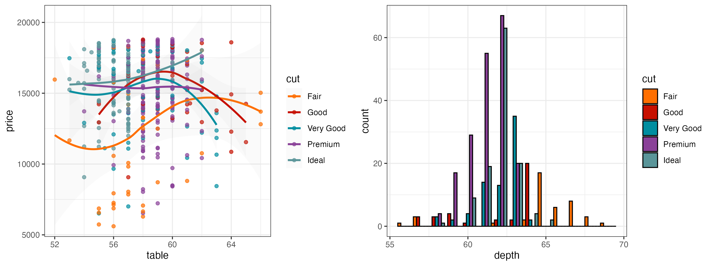
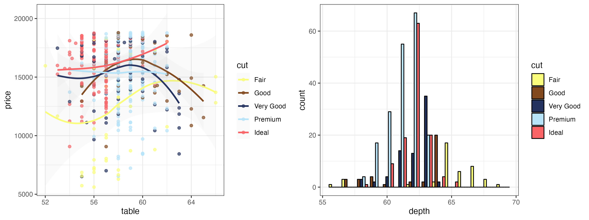
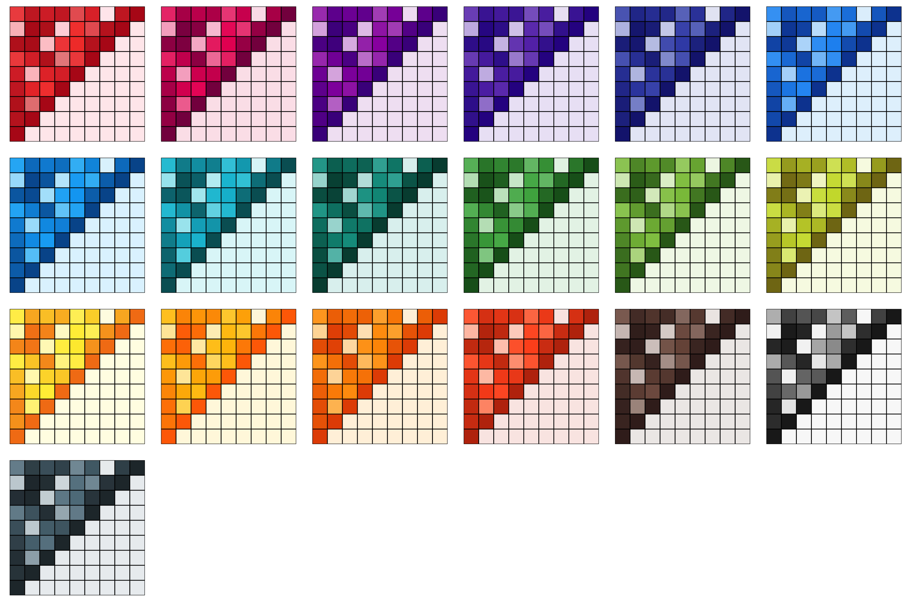
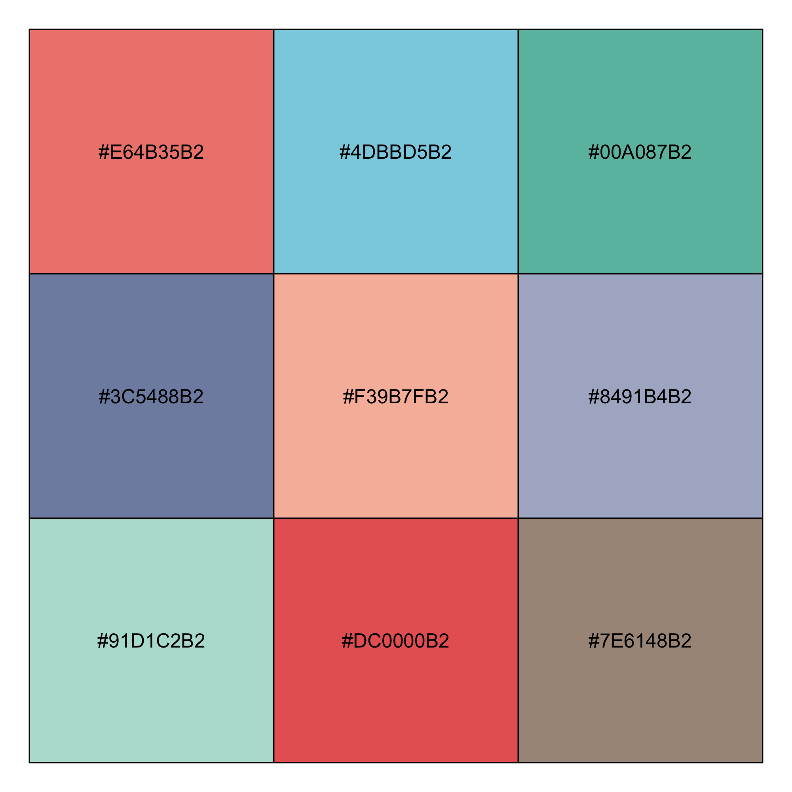

Scientific Journal and Sci-Fi Themed
Color Palettes for ggplot2
Source: vignettes/ggsci.Rmd
ggsci.RmdIntroduction
My eyes were finally opened and I understood nature.
I learned at the same time to love it.
— Claude Monet
ggsci offers a collection of high-quality color palettes inspired by colors used in scientific journals, data visualization libraries, science fiction movies, and TV shows. The color palettes in ggsci are available as ggplot2 scales. For all the color palettes, the corresponding scales are named as:
scale_color_palname()scale_fill_palname()
We also provided aliases, such as scale_colour_palname() for scale_color_palname(). All available color palettes are summarized in the table below.
Discrete Color Palettes
We will use scatterplots with smooth curves, and bar plots to demonstrate the discrete color palettes in ggsci.
library("ggsci")
library("ggplot2")
library("gridExtra")
data("diamonds")
p1 <- ggplot(
subset(diamonds, carat >= 2.2),
aes(x = table, y = price, colour = cut)
) +
geom_point(alpha = 0.7) +
geom_smooth(method = "loess", alpha = 0.05, size = 1, span = 1) +
theme_bw()
p2 <- ggplot(
subset(diamonds, carat > 2.2 & depth > 55 & depth < 70),
aes(x = depth, fill = cut)
) +
geom_histogram(colour = "black", binwidth = 1, position = "dodge") +
theme_bw()NPG
The NPG palette is inspired by the plots in the journals published by
p1_npg <- p1 + scale_color_npg()
p2_npg <- p2 + scale_fill_npg()
grid.arrange(p1_npg, p2_npg, ncol = 2)## `geom_smooth()` using formula 'y ~ x'
AAAS
The AAAS palette is inspired by the plots in the journals published by
p1_aaas <- p1 + scale_color_aaas()
p2_aaas <- p2 + scale_fill_aaas()
grid.arrange(p1_aaas, p2_aaas, ncol = 2)## `geom_smooth()` using formula 'y ~ x'
NEJM
The NEJM palette is inspired by the plots in
p1_nejm <- p1 + scale_color_nejm()
p2_nejm <- p2 + scale_fill_nejm()
grid.arrange(p1_nejm, p2_nejm, ncol = 2)## `geom_smooth()` using formula 'y ~ x'
Lancet
The Lancet palette is inspired by the plots in
p1_lancet <- p1 + scale_color_lancet()
p2_lancet <- p2 + scale_fill_lancet()
grid.arrange(p1_lancet, p2_lancet, ncol = 2)## `geom_smooth()` using formula 'y ~ x'
JAMA
The JAMA palette is inspired by the plots in
p1_jama <- p1 + scale_color_jama()
p2_jama <- p2 + scale_fill_jama()
grid.arrange(p1_jama, p2_jama, ncol = 2)## `geom_smooth()` using formula 'y ~ x'
JCO
The JCO palette is inspired by the the plots in
p1_jco <- p1 + scale_color_jco()
p2_jco <- p2 + scale_fill_jco()
grid.arrange(p1_jco, p2_jco, ncol = 2)## `geom_smooth()` using formula 'y ~ x'
UCSCGB
The UCSCGB palette is from the colors used by UCSC Genome Browser for representing chromosomes. This palette (interpolated, with alpha) is intensively used in visualizations generated by Circos.
p1_ucscgb <- p1 + scale_color_ucscgb()
p2_ucscgb <- p2 + scale_fill_ucscgb()
grid.arrange(p1_ucscgb, p2_ucscgb, ncol = 2)## `geom_smooth()` using formula 'y ~ x'
D3
The D3 palette is from the categorical colors used by D3.js (version 3.x and before). There are four palette types (category10, category20, category20b, category20c) available.
p1_d3 <- p1 + scale_color_d3()
p2_d3 <- p2 + scale_fill_d3()
grid.arrange(p1_d3, p2_d3, ncol = 2)## `geom_smooth()` using formula 'y ~ x'
LocusZoom
The LocusZoom palette is based on the colors used by LocusZoom.
p1_locuszoom <- p1 + scale_color_locuszoom()
p2_locuszoom <- p2 + scale_fill_locuszoom()
grid.arrange(p1_locuszoom, p2_locuszoom, ncol = 2)## `geom_smooth()` using formula 'y ~ x'
IGV
The IGV palette is from the colors used by Integrative Genomics Viewer for representing chromosomes. There are two palette types (default, alternating) available.
p1_igv_default <- p1 + scale_color_igv()
p2_igv_default <- p2 + scale_fill_igv()
grid.arrange(p1_igv_default, p2_igv_default, ncol = 2)## `geom_smooth()` using formula 'y ~ x'
COSMIC
Color palettes inspired by the colors used in projects from the Catalogue Of Somatic Mutations in Cancers (COSMIC).
p1_cosmic_hallmarks_light <- p1 + scale_color_cosmic("hallmarks_light")
p2_cosmic_hallmarks_light <- p2 + scale_fill_cosmic("hallmarks_light")
grid.arrange(p1_cosmic_hallmarks_light, p2_cosmic_hallmarks_light, ncol = 2)## `geom_smooth()` using formula 'y ~ x'
p1_cosmic_hallmarks_dark <- p1 + scale_color_cosmic("hallmarks_dark")
p2_cosmic_hallmarks_dark <- p2 + scale_fill_cosmic("hallmarks_dark")
grid.arrange(p1_cosmic_hallmarks_dark, p2_cosmic_hallmarks_dark, ncol = 2)## `geom_smooth()` using formula 'y ~ x'
p1_cosmic_signature <- p1 + scale_color_cosmic("signature_substitutions")
p2_cosmic_signature <- p2 + scale_fill_cosmic("signature_substitutions")
grid.arrange(p1_cosmic_signature, p2_cosmic_signature, ncol = 2)## `geom_smooth()` using formula 'y ~ x'
UChicago
The UChicago palette is based on the colors used by the default, light, dark) available.
p1_uchicago <- p1 + scale_color_uchicago()
p2_uchicago <- p2 + scale_fill_uchicago()
grid.arrange(p1_uchicago, p2_uchicago, ncol = 2)## `geom_smooth()` using formula 'y ~ x'
Star Trek
This palette is inspired by the (uniform) colors in
p1_startrek <- p1 + scale_color_startrek()
p2_startrek <- p2 + scale_fill_startrek()
grid.arrange(p1_startrek, p2_startrek, ncol = 2)## `geom_smooth()` using formula 'y ~ x'
Tron Legacy
This palette is inspired by the colors used in
p1_tron <- p1 + theme_dark() + theme(
panel.background = element_rect(fill = "#2D2D2D"),
legend.key = element_rect(fill = "#2D2D2D")
) +
scale_color_tron()
p2_tron <- p2 + theme_dark() + theme(
panel.background = element_rect(fill = "#2D2D2D")
) +
scale_fill_tron()
grid.arrange(p1_tron, p2_tron, ncol = 2)## `geom_smooth()` using formula 'y ~ x'
Futurama
This palette is inspired by the colors used in the TV show
p1_futurama <- p1 + scale_color_futurama()
p2_futurama <- p2 + scale_fill_futurama()
grid.arrange(p1_futurama, p2_futurama, ncol = 2)## `geom_smooth()` using formula 'y ~ x'
Rick and Morty
This palette is inspired by the colors used in the TV show
p1_rickandmorty <- p1 + scale_color_rickandmorty()
p2_rickandmorty <- p2 + scale_fill_rickandmorty()
grid.arrange(p1_rickandmorty, p2_rickandmorty, ncol = 2)## `geom_smooth()` using formula 'y ~ x'
The Simpsons
This palette is inspired by the colors used in the TV show
p1_simpsons <- p1 + scale_color_simpsons()
p2_simpsons <- p2 + scale_fill_simpsons()
grid.arrange(p1_simpsons, p2_simpsons, ncol = 2)## `geom_smooth()` using formula 'y ~ x'
Continuous Color Palettes
We will use a correlation matrix visualization (a special type of heatmap) to demonstrate the continuous color palettes in ggsci.
library("reshape2")
data("mtcars")
cor <- cor(unname(cbind(mtcars, mtcars, mtcars, mtcars)))
cor_melt <- melt(cor)
p3 <- ggplot(
cor_melt,
aes(x = Var1, y = Var2, fill = value)
) +
geom_tile(colour = "black", size = 0.3) +
theme_bw() +
theme(
axis.title.x = element_blank(),
axis.title.y = element_blank()
)GSEA
The GSEA palette (continuous) is inspired by the heatmaps generated by GSEA GenePattern.
p3_gsea <- p3 + scale_fill_gsea()
p3_gsea_inv <- p3 + scale_fill_gsea(reverse = TRUE)
grid.arrange(p3_gsea, p3_gsea_inv, ncol = 2)
Material Design
The
We generate a random matrix first:
library("reshape2")
set.seed(42)
k <- 9
x <- diag(k)
x[upper.tri(x)] <- runif(sum(1:(k - 1)), 0, 1)
x_melt <- melt(x)
p4 <- ggplot(x_melt, aes(x = Var1, y = Var2, fill = value)) +
geom_tile(colour = "black", size = 0.3) +
scale_x_continuous(expand = c(0, 0)) +
scale_y_continuous(expand = c(0, 0)) +
theme_bw() + theme(
legend.position = "none", plot.background = element_blank(),
axis.line = element_blank(), axis.ticks = element_blank(),
axis.text.x = element_blank(), axis.text.y = element_blank(),
axis.title.x = element_blank(), axis.title.y = element_blank(),
panel.background = element_blank(), panel.border = element_blank(),
panel.grid.major = element_blank(), panel.grid.minor = element_blank()
)Plot the matrix with the 19 material design color palettes:
grid.arrange(
p4 + scale_fill_material("red"), p4 + scale_fill_material("pink"),
p4 + scale_fill_material("purple"), p4 + scale_fill_material("deep-purple"),
p4 + scale_fill_material("indigo"), p4 + scale_fill_material("blue"),
p4 + scale_fill_material("light-blue"), p4 + scale_fill_material("cyan"),
p4 + scale_fill_material("teal"), p4 + scale_fill_material("green"),
p4 + scale_fill_material("light-green"), p4 + scale_fill_material("lime"),
p4 + scale_fill_material("yellow"), p4 + scale_fill_material("amber"),
p4 + scale_fill_material("orange"), p4 + scale_fill_material("deep-orange"),
p4 + scale_fill_material("brown"), p4 + scale_fill_material("grey"),
p4 + scale_fill_material("blue-grey"),
ncol = 6
)
From the figure above, we can see that even though an identical matrix was visualized by all plots, some palettes are more preferrable than the others because our eyes are more sensitive to the changes of their saturation levels.
Non-ggplot2 Graphics
To apply the color palettes in ggsci to other graphics systems (such as base graphics and lattice graphics), simply use the palette generator functions in the table above. For example:
mypal <- pal_npg("nrc", alpha = 0.7)(9)
mypal## [1] "#E64B35B2" "#4DBBD5B2" "#00A087B2" "#3C5488B2" "#F39B7FB2" "#8491B4B2"
## [7] "#91D1C2B2" "#DC0000B2" "#7E6148B2"
You will be able to use the generated hex color codes for such graphics systems accordingly. The transparent level of the entire palette is easily adjustable via the argument "alpha" in every generator or scale function.
Discussion
Please note some of the palettes might not be the best choice for certain purposes, such as color-blind safe, photocopy safe, or print friendly. If you do have such considerations, you might want to check out color palettes like ColorBrewer and viridis.
The color palettes in this package are solely created for research purposes. The authors are not responsible for the usage of such palettes.